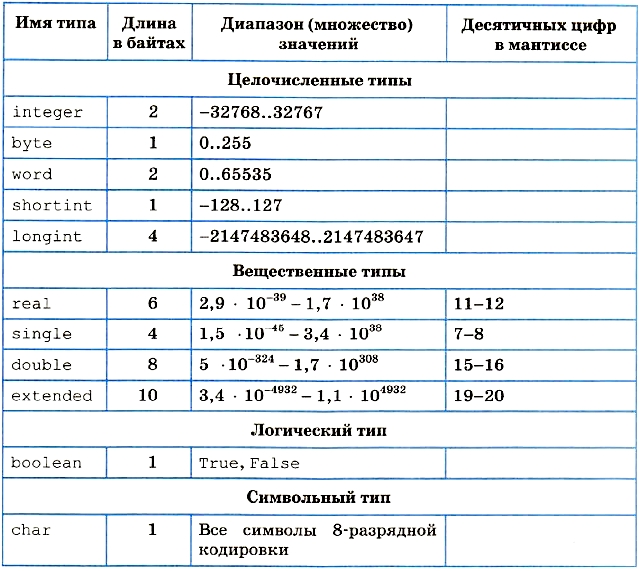

Элементы языка Паскаль и типы данных
Алфавит
Алфавит языка состоит из множества символов, включающих в себя буквы, цифры и специальные символы.
Латинские буквы: от А до Z (заглавные) и от а до z (строчные).
Цифры: 0, 1, 2, 3, 4, 5, 6, 7, 8, 9.
Специальные символы: + - * / = < > [ ] . , ( ) : ; { } ^ @ $ #.
Следующие комбинации специальных символов являются едиными символами (их нельзя разделять пробелами):
- := знак присваивания;
- <= меньше или равно;
- >= больше или равно;
- (* *) ограничители комментариев (наряду с { });
- <> не равно;
- (. .) эквивалент [ ].
Пробелы — символ пробела (код ASCII 32) и все управляющие символы кода ASCII (от 0 до 31).
Служебные слова
К спецсимволам относятся и служебные слова, смысл которых определен однозначно. Служебные слова не могут быть использованы для других целей. С точки зрения языка, они являются едиными элементами алфавита. Вот некоторые служебные слова: Program, Var, array, If, Do, While и др.
Идентификаторы
Идентификатором называется символическое имя определенного программного объекта. Такими объектами являются: имена констант, переменных, типов данных, процедур и функций, программ. Идентификатор — это любая последовательность букв и цифр, начинающаяся с буквы. К буквам приравнивается также знак подчеркивания. Длина идентификатора может быть произвольной, но значащими являются только первые 63 символа.
Комментарии
Следующие конструкции представляют собой комментарии и поэтому пропускаются компилятором:
- {любой текст, не содержащий символ "фигурная скобка"}
- (* любой текст, не содержащий символы "звездочка, круглая скобка"*)
- //последующий текст до конца строки.
Буквы русского алфавита употребляются только в комментариях, символьных и текстовых константах.
Концепция типов данных в Паскале
Концепция типов данных является одной из центральных в любом языке программирования. Как вы знаете, с типом величины связаны три ее свойства: форма внутреннего представления, множество принимаемых значений и множество допустимых операций.
Паскаль характеризуется большим разнообразием типов данных, отраженном на рис. 3.10.
Тип данных называется порядковым, если он состоит из счетного количества значений, которые можно пронумеровать. Отсюда следует, что на этом множестве значений существуют понятия «следующий» и «предыдущий».
В стандартном Паскале Вирта отсутствовал строковый тип. Он был внесен в Турбо Паскаль. Кроме того, в Турбо Паскале целые и вещественные — это группы типов. В старших версиях Турбо Паскаля появился процедурный тип и тип «объект».
Каждый тип имеет свой идентификатор. В таблице 3.2 представлена информация о простых типах данных, определенных в Турбо Паскале и последующих диалектах языка. Для вещественных типов в скобках указано количество сохраняемых значащих цифр мантиссы в десятичном представлении числа.
Типы данных
Типы пользователя
Одна из принципиальных возможностей Паскаля состоит в том, что пользователю разрешается определять свои типы данных. Типы пользователя всегда базируются на стандартных типах данных Паскаля. Для описания типов пользователя в Паскале существует раздел типов, начинающийся со служебного слова Туре. К простым типам пользователя относятся перечислимый и интервальный типы данных.
Перечислимый тип
Задается непосредственно перечислением (списком) всех значений, которые может принимать переменная данного типа:
Туре <имя типа> = (<список значений>)
Определенное таким образом имя типа затем используется для описания переменных. Например:
Type Gaz = (C, O, N, F);
Metal = (Fe, Co, Na, Cu, Zn);
Var G1, G2, G3: Gaz;
Met1, Met2: Metal;
Day: (Sun, Mon, Tue, Wed, Thu, Fri, Sat);
Здесь Gaz и Metal — имена перечислимых типов, которые ставятся в соответствие переменным G1, G2, GS и Met1, Met2. Переменной Day назначается перечислимый тип, которому не присвоено имени.
Значения, входящие в перечислимый тип, являются константами. Действия над ними подчиняются правилам, применимым к константам. Каждое значение в перечислимом типе занимает в памяти 2 байта, поэтому число значений этого типа не должно превышать 65 535.
Перечислимый тип — упорядоченное множество. Его элементы пронумерованы, начиная от О в порядке следования в описании.
В программе, в которой присутствует данное выше описание переменной Day, возможен такой фрагмент:
If Day=Sun Then write('Ура! Сегодня выходной!');
Ограниченный тип
задается как упорядоченное ограниченное подмножество некоторого порядкового типа:
<константа 1> . . <константа 2>
Порядковый номер первой константы не должен превышать номера второй константы в соответствующем базовом типе.
При исполнении программы автоматически контролируется принадлежность значений переменной ограниченного типа установленному диапазону. При выходе из диапазона исполнение программы прерывается.
Type Numbers = 1..31;
Alf = 'A'..'Z';
Var Data: Numbers;
Bukva: Alf;
Структурные типы
Особенностью Паскаля является то, что в нем структуры данных рассматриваются как типы — структурные типы данных. Одна величина простого типа представляет собой одно значение: целое число, вещественное число, символ и пр. Одна величина структурного типа представляет собой совокупность множества значений; примеры — числовой массив, символьная строка и пр.
Автор Паскаля Вирт придавал большое значение разнообразию типов данных в языке программирования. В своей книге «Алгоритмы и структуры данных» он подчеркивает зависимость алгоритма решения задачи от способа организации данных в программе. Удачно выбранный способ организации данных упрощает алгоритм решения задачи.